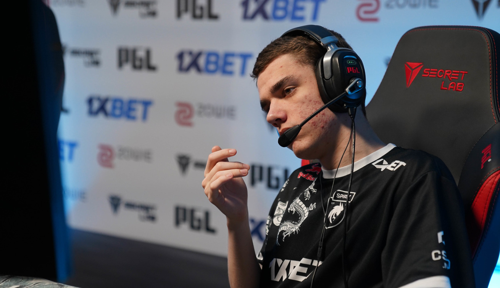

zont1x: «У нас есть ментальные модели, которые несовместимы с победителями чемпионатов»
Неудачи Spirit после перерыва в турнире продолжились и на BLAST Fall Final: вылет из четвертьфинала от рук G2 положил конец любым надеждам на победу в Дании для победителей IEM Katowice и BLAST Spring Final.
Российская команда обыграла MOUZ и Eternal Fire на пути к победе в чемпионате BetBoom Dacha Belgrade, но в остальном выглядит как тень команды, которую мы видели в начале года после дебюта Данила «donk» Крышковца в первом дивизионе.
Они потерпели сокрушительное поражение на IEM Cologne, проиграв The MongolZ , после чего G2 разгромили их со счетом 26-4 на двух картах, а затем снова потерпели неудачу в плей-офф ESL Pro League Season 20, несмотря на то, что всего за несколько недель до этого завоевали трофей.

G2 обыгрывают Spirit со счетом 3:0 и выходят в полуфинал осеннего финала
G2 одержали непростую победу со счетом 2:0 над Spirit на сцене BLAST Premier Fall Final, увеличив свое превосходство над российской командой до трех серий подряд, одержав победы над Dust2 (13-9) и Mirage (16-13) и выйдя в полуфинал против Vitality .

Spirit отправляет Astralis на последнее место в дебютном событии cadiaN
Spirit продолжат свое путешествие на BLAST Premier Fall Final после победы над Astralis со счетом 2-1, выполнив работу над Dust2 (13-5) и Mirage (13-11) после поражения от Ancient (3-13).
Благодаря своей победе Spirit получили путевку в четвертьфинал, где им предстоит встретиться с G2 , в то время как Astralis выбыли.

donk побил рекорд убийств CS2 против Wildcard
Данил «donk» Крышковец продолжает ставить рекорды в начале своей карьеры в CS, став рекордсменом по убийствам в CS2, совершив 38 убийств по правилам на Ancient против Wildcard .
Spirit рисковали проиграть на ранней карте ESL Pro League, так как Wildcard оказали доблестное сопротивление, но 155 ADR и 11 множественных убийств donk обеспечили его команде победу со счетом 13-11. 17-летний игрок продолжил доминировать на второй карте Nuke, набрав 37 убийств (с ОТ), что привело его команду к упорной победе со счетом 2-0.